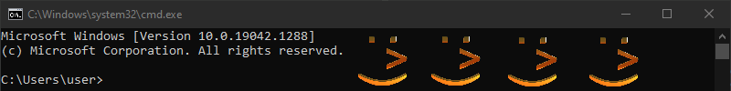

Drawing Outside the Lines II - Console Images
October 21, 2021
Background
Ever since I started programming C++ back in my freshman year of high school, I wanted to be able to manipulate graphics in the console. Most C++ programming courses begin and end with user I/O handled through std::cin and std::cout, with no mention of graphics or even alternate text colors. During my time in that course, "Programming in C++", I would spend extra time when I got home from school digging through the Windows API documentation and finding functions like SetConsoleTextAttribute, SetConsoleCursorPosition, and GetAsyncKeyState which allowed me to use cmd as a rudimentary window for making actual interactive games. In fact, for my final project I implemented Battleship with 16 color text-block rendering and full mouse and keyboard support. Pictured is the title screen of the game as it appears today, and sadly it is mostly nonfunctional on Windows 10.

Even back then, through my searching for ways to render on the console, I had seen discussion on using SetPixel on the console window, but at the time I did not understand what I was doing well enough to make it work. Recently however, I decided on a whim to try again, and managed to manipulate the console's pixels, and with further experimentation I was even able to draw bitmaps.
Implementation
The fundamental mechanics behind rendering an image to the console are acquiring a GDI Device Context handle (HDC) to the console window, and creating Device Independent Bitmaps (DIB) to render to the screen. Getting the console HDC is a simple matter of acquiring the console window handle (HWND) via FindWindowA("ConsoleWindowClass", NULL), and getting its context via the GDI function GetDC.
With the console's HDC you must then create a compatible device context to be used for each bitmap via CreateCompatibleDC. This HDC is the handle to the context of the bitmap you will create, and is used for both creating the bitmap and actually rendering it to the console window. With a correctly configured bitmap header, you can then create a device indepentent bitmap for your image with CreateDIBSection. This function leaves you with a void* pointer to the memory for the bitmap, which can be filled with image data acquired by any means. (more detail provided ingraphic.cpp).
For this project, I opted to useSTB Image,as it is a lightweight and convenient solution for loading still images and animated GIFs. To get the data in a format compatible with the DIB, the images must be flipped vertically and have their RGB data reordered to BGR. The GIF animation is handled by copying a given frame's image data into the bitmap memory based on the frame delay timings read from the GIF.
To actually draw the image to the screen, the function StretchBlt is used, which can resize any sized image to fit in a convenient size for the console, which I have set to a height constraint of 10 console lines.